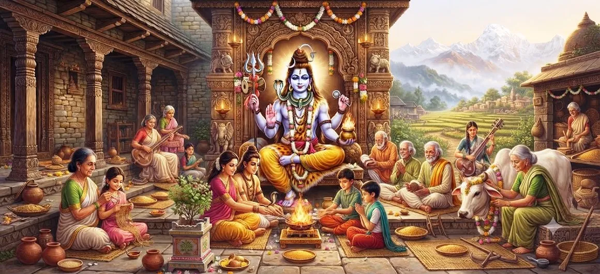

गृहपति का अवतार - भाग 3
शतरुद्र संहिता का अध्याय 15 पिछले अध्यायों में विकसित घटनाओं और आध्यात्मिक विषयों के बाद गृहपति की पवित्र कथा को जारी रखता है।
गृहपति अभिव्यक्ति जिम्मेदारी, भक्ति, सुरक्षा, अनुशासन, सेवा और धर्म की एक महत्वपूर्ण आध्यात्मिक समझ प्रस्तुत करती है। कथा भक्तों को न केवल औपचारिक पूजा में बल्कि रोजमर्रा के कर्तव्यों के ईमानदारी से प्रदर्शन में भी दिव्य चेतना देखने के लिए प्रोत्साहित करती है।
यह तीसरा भाग गृहपति अनुक्रम को उसके निष्कर्ष की ओर लाता है और पाठक को अगली दिव्य अभिव्यक्ति, यक्षेश्वर के रूप में शिव के अवतार के लिए तैयार करता है।
अध्याय 15 की मुख्य बातें
गृहपति की दिव्य अभिव्यक्ति
गृहपति के रूप में शिव की अभिव्यक्ति का पवित्र विवरण जारी है।
गृहस्थ धर्म
घरेलू जिम्मेदारियों और धर्म के बीच संबंध की पड़ताल करता है।
कार्य में भक्ति
दिखाता है कि कैसे ईमानदार कार्य भक्ति की अभिव्यक्ति बन सकते हैं।
संरक्षण और सेवा
दूसरों के प्रति दयालु देखभाल और जिम्मेदार सेवा पर जोर देता है।
आध्यात्मिक अनुशासन
अनुशासन, धैर्य, सच्चाई और आत्म-नियंत्रण को प्रोत्साहित करता है।
यक्षेश्वर में परिवर्तन
भगवान शिव के अगले प्रकटीकरण के लिए कथा तैयार करता है।
इस अध्याय में मुख्य विषय
गृहपति कथा की निरंतरता
अध्याय 15 पिछले अध्यायों से गृहपति का पवित्र विवरण जारी रखता है। कथा गृहपति के दिव्य महत्व और जिम्मेदार और धार्मिक घरेलू जीवन से जुड़े आध्यात्मिक मूल्यों पर केंद्रित है।
निरंतरता पाठक को यह विचार करने की अनुमति देती है कि सामान्य जिम्मेदारियों, रिश्तों, सेवा और अनुशासित आचरण के माध्यम से दिव्य जागरूकता कैसे परिलक्षित हो सकती है।
गृहस्थ जीवन का पवित्र अर्थ
गृहपति सिद्धांत सिखाता है कि गृहस्थ जीवन को आध्यात्मिक जागरूकता से अलग नहीं किया जाना चाहिए। एक घर स्मरण, प्रार्थना, करुणा, सेवा, अनुशासन और पारस्परिक सम्मान का स्थान बन सकता है।
जब घरेलू जिम्मेदारियाँ ईमानदारी और जागरूकता के साथ निभाई जाती हैं, तो सामान्य परिवेश आध्यात्मिक विकास में सहायक बन सकता है।
कर्तव्य, उत्तरदायित्व और धर्म
धर्म की अभिव्यक्ति अपने कर्तव्यों के उत्तरदायित्वपूर्ण पालन से होती है। गृहपति आदर्श लोगों को कर्तव्य को केवल एक बोझ मानने के बजाय अपनी जिम्मेदारियों को ईमानदारी से निभाने के लिए प्रोत्साहित करता है।
पारिवारिक जिम्मेदारियाँ, दूसरों की देखभाल, सच्चा आचरण, और उन लोगों की सुरक्षा जो हम पर निर्भर हैं, ये सभी सही इरादे से किए जाने पर धर्म की अभिव्यक्ति बन सकते हैं।
सेवा के माध्यम से भक्ति
सेवा सबसे व्यावहारिक तरीकों में से एक है जिससे भक्ति दैनिक जीवन में प्रवेश कर सकती है। परिवार के सदस्यों की मदद करना, जरूरतमंद लोगों की देखभाल करना, संसाधनों को साझा करना और बिना स्वार्थ के जिम्मेदारियाँ निभाना आध्यात्मिक पेशकश के रूप बन सकते हैं।
गृहपति शिक्षण भक्तों को यह समझने के लिए प्रोत्साहित करता है कि भक्ति अनुष्ठान तक सीमित नहीं है। इसे दयालु कार्रवाई के माध्यम से भी व्यक्त किया जा सकता है।
सुरक्षा और करुणा
सुरक्षा जिम्मेदारी का एक महत्वपूर्ण आयाम है। एक जिम्मेदार व्यक्ति न केवल भौतिक सहायता प्रदान करना चाहता है, बल्कि उनकी देखभाल के लिए सौंपे गए लोगों की गरिमा, शांति और कल्याण की रक्षा भी करना चाहता है।
करुणा सुरक्षा को सार्थक बनाती है। करुणा के बिना जिम्मेदारी यांत्रिक हो सकती है। करुणा के साथ, जिम्मेदारी देखभाल की वास्तविक अभिव्यक्ति बन जाती है।
अनुशासन और आंतरिक पवित्रता
आध्यात्मिक अनुशासन की शुरुआत स्वयं के आचरण पर नियंत्रण से होती है। धैर्य, सच्चाई, संयम, विनम्रता और निरंतरता सच्ची भक्ति के लिए आवश्यक आंतरिक स्थिरता बनाने में मदद करती है।
इसलिए गृहपति सिद्धांत का आंतरिक आयाम भी है और बाहरी भी। जिम्मेदार आचरण इरादे की शुद्धि और आत्म-नियंत्रण की खेती से शुरू होता है।
गृहपति का आध्यात्मिक संदेश
गृहपति का केंद्रीय आध्यात्मिक संदेश यह है कि दिव्य जागरूकता को सामान्य जीवन के माध्यम से विकसित किया जा सकता है। यदि ईमानदारी और समर्पण के साथ संपर्क किया जाए तो घर, परिवार, कार्य, सेवा और जिम्मेदारी सभी आध्यात्मिक अभ्यास के क्षेत्र बन सकते हैं।
भक्त को विशिष्ट स्थानों या क्षणों तक आध्यात्मिक जागरूकता को सीमित करने के बजाय दयालु संबंधों और धार्मिक कार्यों के माध्यम से ईश्वर को पहचानने के लिए प्रोत्साहित किया जाता है।
गृहपति अनुक्रम का समापन
इस तीसरे भाग के साथ, गृहपति के अवतार को समर्पित विस्तारित अनुक्रम अपने समापन चरण तक पहुँचता है। पिछले अध्यायों ने कर्तव्य, भक्ति, सुरक्षा, सेवा, अनुशासन और धर्म के विषयों के माध्यम से गृहपति के महत्व को विकसित किया है।
इस अनुक्रम का निष्कर्ष भगवान शिव की एक और अभिव्यक्ति के लिए एक प्राकृतिक परिवर्तन प्रदान करता है, जिससे पाठक को उन कई रूपों की खोज जारी रखने की अनुमति मिलती है जिनके माध्यम से शिव सिखाते हैं, मार्गदर्शन करते हैं, रक्षा करते हैं और दिव्य सत्य को प्रकट करते हैं।
शिव का यक्षेश्वर के रूप में अवतार
अगला अध्याय शिव के यक्षेश्वर के रूप में अवतार की ओर मुड़ता है। यह परिवर्तन शतरुद्र संहिता में वर्णित दिव्य अभिव्यक्तियों के बड़े क्रम को जारी रखता है।
यक्षेश्वर से जुड़ी परिस्थितियों और आध्यात्मिक महत्व का पता लगाने के लिए पाठक सीधे अगले अध्याय में जा सकते हैं।
भक्तों के लिए मार्गदर्शन
भक्त दैनिक जिम्मेदारियों में अधिक जागरूकता लाकर गृहपति की शिक्षा को लागू कर सकते हैं। परिवार की देखभाल, ईमानदारी से काम, सेवा, धैर्य, सुरक्षा और करुणा सभी को आध्यात्मिक अभ्यास के अवसरों के रूप में देखा जा सकता है।
भगवान शिव का नियमित स्मरण इन कार्यों को सचेतन प्रसाद में बदलने में मदद कर सकता है। गहरा सबक आचरण, रिश्तों और जिम्मेदारी को आकार देने के लिए समर्पण की अनुमति देना है।
अध्याय 15 की मुख्य शिक्षाएँ
पवित्र जिम्मेदारी
घरेलू जिम्मेदारी को एक पवित्र कर्तव्य के रूप में देखा जा सकता है।
क्रिया के माध्यम से भक्ति
ईमानदारी से किया गया कार्य भक्ति की अभिव्यक्ति बन सकता है।
दयालु संरक्षण
करुणा द्वारा निर्देशित होने पर संरक्षण सार्थक हो जाता है।
धर्म
धार्मिक आचरण व्यक्तिगत और घरेलू जीवन में सामंजस्य बनाए रखता है।
आत्म अनुशासन
आंतरिक अनुशासन ईमानदारी से आध्यात्मिक अभ्यास का समर्थन करता है।
दिव्य जागरूकता
दिव्य जागरूकता को सामान्य जीवन के माध्यम से विकसित किया जा सकता है।
आध्यात्मिक चिंतन
गृहपति कथा सामान्य जिम्मेदारी की पवित्र क्षमता पर एक मूल्यवान प्रतिबिंब प्रस्तुत करती है। आध्यात्मिक जीवन के लिए पारिवारिक कर्तव्यों या सामाजिक रिश्तों से विमुख होना आवश्यक नहीं है। इसके बजाय, दैनिक जीवन की जिम्मेदारियाँ आध्यात्मिक परिष्कार का साधन बन सकती हैं जब उन्हें सच्चाई, करुणा, अनुशासन, धैर्य और भक्ति के साथ निभाया जाए। परिवार के सदस्यों की देखभाल सेवा बन सकती है। दूसरों की रक्षा करना करुणा की अभिव्यक्ति बन सकता है। ईमानदारी से किया गया काम प्रसाद बन सकता है। धैर्य आत्म-नियंत्रण का एक रूप बन सकता है। जिम्मेदारी धर्म बन सकती है. इस समझ के माध्यम से, भक्त भगवान शिव की याद को जीवन के व्यावहारिक विवरण में लाना सीखता है। गृहपति अनुक्रम के पूरा होने से पाठक को सामान्य के भीतर पवित्र को पहचानने की संभावना की गहरी सराहना मिलती है।
अध्याय 15 का संदेश जीना
दैनिक उत्तरदायित्वों को ईमानदारी और जागरूकता से निभाते हुए गृहपति की शिक्षा का अभ्यास किया जा सकता है। आध्यात्मिक जीवन को सामान्य कर्तव्यों से अलग करने के बजाय, भक्त सचेत रूप से अपने रिश्तों में धैर्य, करुणा, सच्चाई और सेवा ला सकते हैं।
दयालुता के छोटे-छोटे कार्य भी शिव के स्मरण के साथ किए जाने पर सार्थक हो सकते हैं। इस तरह, आध्यात्मिक जागरूकता रोजमर्रा की जिंदगी की लय का हिस्सा बन जाती है।
प्रमुख आध्यात्मिक अवधारणाएँ
घर का स्वामी या स्वामी और भगवान शिव से जुड़ा एक पवित्र स्वरूप।
धार्मिक आचरण और जिम्मेदारी जो सद्भाव और पवित्र व्यवस्था को बनाए रखती है।
निःस्वार्थ सेवा ईमानदारी और करुणा के साथ की गई।
ईश्वर के प्रति प्रेमपूर्ण भक्ति, स्मरण, श्रद्धा और समर्पण।
परिवार, समाज और हमारी देखभाल के लिए सौंपे गए लोगों के प्रति कर्तव्यों की सचेत पूर्ति।
सत्यता, धैर्य, आत्म-नियंत्रण, करुणा और सेवा का निरंतर अभ्यास।
अध्याय सारांश
शतरुद्र संहिता अध्याय 15 जारी है और गृहपति कथा को उसके समापन चरण की ओर लाता है। अध्याय गृहपति को एक पवित्र अभिव्यक्ति के रूप में प्रस्तुत करता है जिसके माध्यम से भक्त दिव्य जागरूकता और घरेलू जिम्मेदारी के बीच संबंध पर विचार कर सकते हैं। कर्तव्य, सेवा, सुरक्षा, करुणा, अनुशासन, सच्चाई और धर्म को आध्यात्मिक रूप से जागरूक जीवन के महत्वपूर्ण पहलुओं के रूप में प्रस्तुत किया जाता है। यह शिक्षा भक्तों को यह पहचानने के लिए प्रोत्साहित करती है कि पवित्रता औपचारिक पूजा तक ही सीमित नहीं है। यदि ईमानदारी और समर्पण के साथ निभाया जाए तो साधारण जिम्मेदारियाँ सार्थक आध्यात्मिक अभ्यास बन सकती हैं। गृहपति अनुक्रम का पूरा होना पाठक को शतरुद्र संहिता में वर्णित अगली दिव्य अभिव्यक्ति, शिव के यक्षेश्वर के रूप में अवतार, के लिए भी तैयार करता है।
अक्सर पूछे जाने वाले प्रश्न
① शतरुद्र संहिता अध्याय 15 का विषय क्या है?
अध्याय 15 गृहपति के अवतार को जारी रखता है और पवित्र कथा के इस हिस्से को उसके समापन चरण की ओर लाता है।
② गृहपति का आध्यात्मिक महत्व क्या है?
गृहपति घरेलू जिम्मेदारी, सुरक्षा, सेवा, अनुशासन, भक्ति और धार्मिक आचरण से जुड़े एक पवित्र सिद्धांत का प्रतिनिधित्व करता है।
③ गृहपति कथा का भाग 3 किस पर जोर देता है?
भाग 3 जिम्मेदारी, सेवा, करुणा, अनुशासन, धर्म और रोजमर्रा की जिंदगी में दिव्य जागरूकता को पहचानने के आध्यात्मिक मूल्य पर जोर देता है।
④ क्या घरेलू कर्तव्य आध्यात्मिक अभ्यास बन सकते हैं?
हाँ. जब ईमानदारी, करुणा, जिम्मेदारी, आत्म-नियंत्रण और भक्ति के साथ प्रदर्शन किया जाता है, तो सामान्य कर्तव्य आध्यात्मिक अभ्यास की अभिव्यक्ति बन सकते हैं।
⑤ गृहपति कथा का केंद्रीय पाठ क्या है?
केंद्रीय सबक यह है कि भक्ति और धार्मिक जिम्मेदारी को रोजमर्रा की जिंदगी में एकीकृत किया जा सकता है, जिससे सामान्य कार्यों को आध्यात्मिक जागरूकता की सार्थक अभिव्यक्ति बनने की अनुमति मिलती है।
⑥ गृहपति के अवतार - भाग 3 के बाद कौन सा अध्याय आता है?
अगला अध्याय शिव का यक्षेश्वर के रूप में अवतार है।
"जब कर्तव्य निष्ठा से निभाया जाता है, तो सामान्य जीवन आध्यात्मिक स्मरण का मार्ग बन जाता है।"
शतरुद्र संहिता के माध्यम से जारी रखें
गृहपति क्रम यहीं समाप्त होता है। अगली पवित्र अभिव्यक्ति, यक्षेश्वर के रूप में शिव के अवतार, को जारी रखें।